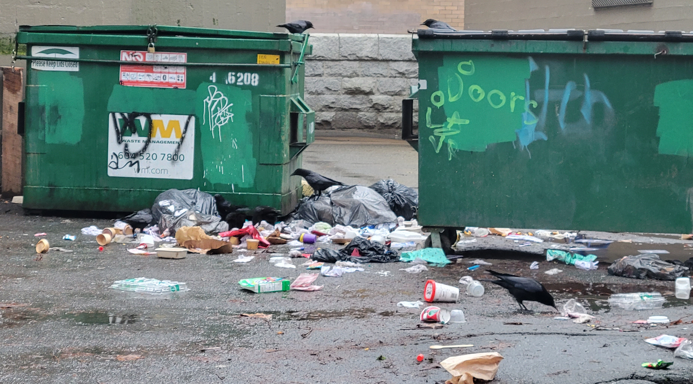
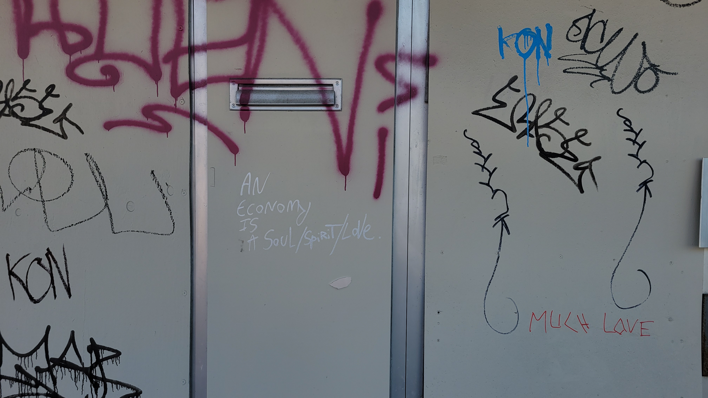
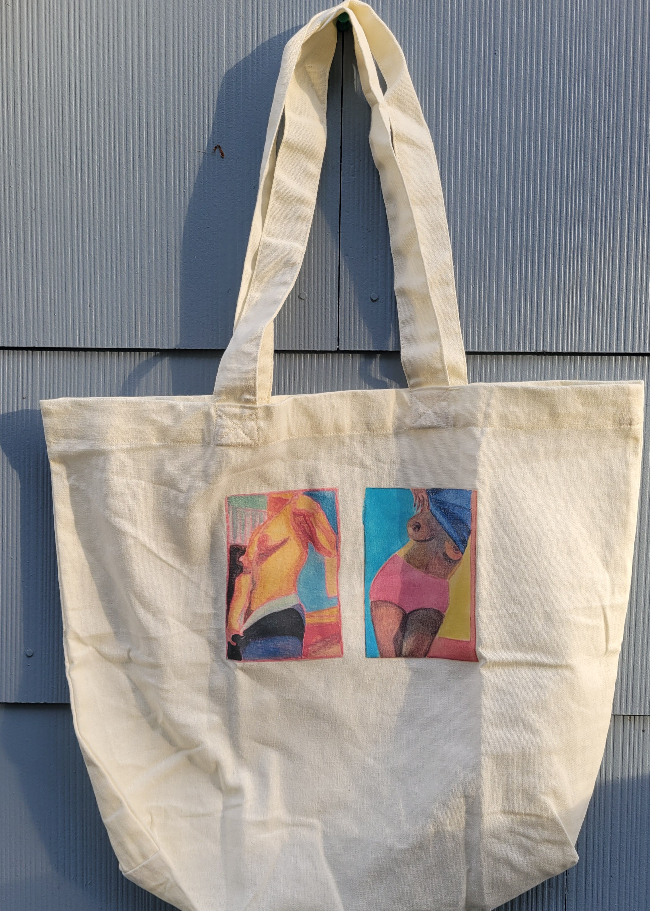
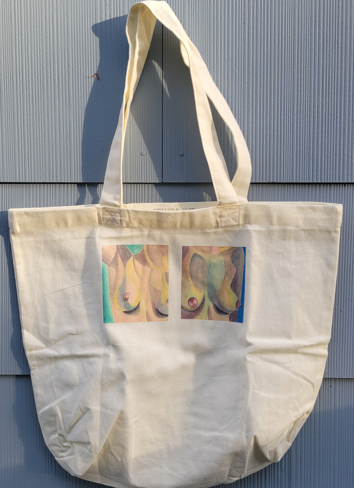
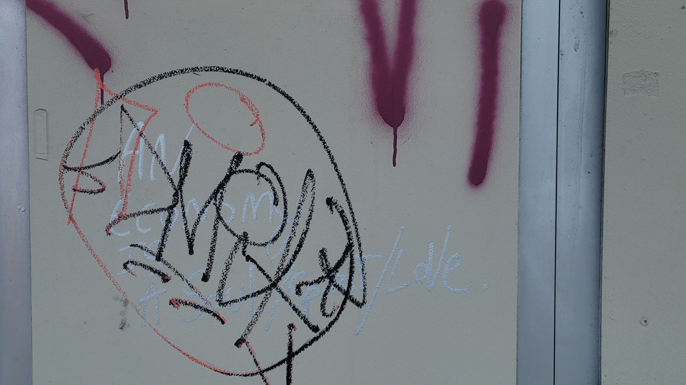

GLEANING URBAN SHORELINES
Vancouver is a settler colonial city occupying the unceded and ancestral territory of the xʷməθkʷəy̓əm (Musqueam), Sḵwx̱wú7mesh (Squamish), and səlilwətaɬ (Tsleil-Waututh) Nations. Urban development since the 1800s has reshaped the contours of land and water, filling in much of the local tidal flat and paving over many streams. Today, streets and alleyways extend like asphalt riverbeds along whose shorelines the excess of human consumption accumulates for disposal. Discarded matters evince spectacular abundances. Crows feast on overflowing human remains. Garbage is composition awaiting compaction.

Site 1In the above image, garbage overflows from two green commercial dumpsters. Spilling from torn bags, various containers and food waste litter the asphalt as crows perch amid the detritus. The photograph was captured by the author in alleyway in the West End taken on a Christmas Day walk, 2023. The below audio recordings below were taken in May 2022.
Not only municipal waste defies containment. Residential curbs mark porous boundaries of property where belonging is in flux. Operating on urban denizens’ tacit knowledge of the city, matters deemed no longer fit for manufactured purpose are offered up as open-ended invitations for recirculation by passersby. Half my wardrobe I gleaned from cardboard boxes left on the sidewalk or by back-alley dumpsters, pinned to trees or tossed over fences. A fleece vest, vintage dress, quarter zip, jeans, sweatpants, and sneakers to name but a few. Items found whilst walking the city now collaborators in my everyday research and writing practices include a coffee mug, backpack, stapler, desk, and Epson WorkForce Pro 4740 printer found with a note reading: I STILL WORK.
sitation deck here
The decadence of disposal is ripe with contamination. Graffiti transforms commercial dumpsters, newspaper boxes, utility boxes, street signs, and the sides of vacant storefronts into sites of discordant discourses. I follow their drift across the city. On a walk to the grocers last month as I was contemplating --- when I encountered something new: An Economy Is A Soul/Spirit/Love.

Site 2
Urban shorelines prove sites of leaky disposal where use and value are rendered differently intelligible by human and more-than-human scavengers. Like the crows, I poach matter and meaning from what I find around, performing bricolage with the physical-conceptual field of my encounter. How do unruly material and semiotic flows interfere with regulated forms of exchange from within the dominate system? With this page, I describe my tactics of practice and how they interfere with hegemonic economies of knowledge production in ways that matter. Roadmap? My reference to hegemonic economies of knowledge production is specific to the formal requirements of institutional publishing which render research outputs legible as objects of knowledge, and, the boundary making practices by which field and researcher are made differentially articulate.
TAKE AND MAKE DO: GLEANING AND SPATIAL BRICOLAGE
Write Murris and Bozalek (2019): "A diffractive methodology contests the notion that a researcher can be taught tools or techniques about a world which is independent of and at an ontological distance from the researcher." As discussed in negative-spaces/interference.html, field and researcher (including tactics of investigation) are provisional configurations whose intelligibility within and as part of specific phenomena is the effect of iterative intra-actions. The site of deep mapping is always shifting and so the same predetermined method(s) cannot be applied to every circumstance. As Les Roberts notes, "the researcher-as-bricoleur" is "equipped with a set of tools rather than a fit-for-purpose methodological strategy" (2018a, 54). My research-creation thus employs tactics.
Tactics are methods whose validity is measured by their applicability to the situation at hand (Roberts 2018b). In The Practice of Everyday Life (1984), Michel de Certeau describes everyday practices such as talking, reading, and moving about as tactical, "ways of operating" the Greeks called mētis (xix). Drawing from The Art of War (make citation), de Certeau understands the tactics of everyday practices as opportunistic; appropriating the hegemonic system from within, such "surreptitious creativities" form a "proliferating illegitimacy" which resists the authority that seeks their administration or suppression (de Certeau 1984, 96). Tactics poach the dominate system from within while eluding discipline. James Scott (1998) elaborates mētis as practical knowledge. In contrast with epistemologies that are abstract, general, and universal, practical knowledge is experiential, situated, and local (Scott 1998). Tactics deploy practical knowledge.
For example, over the summer a friend asked if I would print my artwork on a tote bag. Looking into numerous custom printing websites, it seemed that with the complexity of my designs and color palette, a single bag would cost me over fifty dollars. Unsure what to do, I then remembered seeing blank canvas tote bags for sale at a nearby crafts store. I also remembered that as a kid, my baba had helped me print my drawings of dinosaurs onto transfer paper which I'd then ironed onto T-shirts. I thought, why not print my own tote bags? I soon began experimenting with clothing, printing on T-shirts that were gifted to me or, in most cases, clothing I scavenged from the fabric recycling dumpster in the basement of my building.


I printed my designs using the printer I gleaned from the alleyway, and used part of a research grant to buy transfer paper and printer ink. With my Arts Graduate Research Award I bought yarn and crochet hooks to make a blanket and vests, patterns for which I learned from YouTube. These crafting capers may seem like unrelated hobbies, but for me, they help me modulate my attention. --- how it was a tactic / appropriating system - alternate purposes → In this sense, I invoke the creative humanities by "making as/through thinking and thinking as/through making" (van der Tuin and Verhoeff 2022, 2).
In both field research and website creation, I employ spatial bricolage––the poetics of ‘making do’ with what tools, skills, and materials are readily available (Roberts 2018b). I take and make do with what has been disposed of, discarded, and/or freely given. I appropriate tools, skills, and resources garnered through formal means for alternate purposes. Gleaning is the related practice of gathering information or materials from one's surroundings.
Whatever is found in whatever landscape the gleaner-bricoleur happens to find herself at whatever time she happens to be there is potentially constituent matter of an assemblage-in-progress, the production of which may take a number of different forms (or none at all - the practice of gleaning-bricolage need not cede an 'output' for it to still count as gleaning and/or bricolage). (Roberts 2018b, 6)
For example, instead of learning everything about coding and styling webpages before building my site, I teach myself what I need as I go, often gleaning (copypasting) snippets of open source code (as is custom) that are relevant to what I am attempting in the moment. Each page of my website is differently designed depending on the type of content I want to display. For instance, negative-spaces/rhythmanalysis.html contains a multitude of images, so I learned how to make image grids from W3Schools web tutorials ("How To Create an Image Grid" 2023). When constructing the .html documents, I even glean from myself, copypasting fragments of form from one page to perform a similar function on another.
I also glean practical knowledge developed teaching, practicing, and consulting on matters of Cartesian cartography and geographic information systems (GIS). I learned to use git and Github––the version control software and internet hosting platform I use to track my thesis process––through my job at UBC Library where I develop and lead workshops on GIS, as well as provide one on one consultations. In consults, I am often required to troubleshoot technical workflows. This requires not that I know everything beforehand, but that I know how to find information relevant to the question at hand. Whether giving GIS consults, working as a cartography Teaching Assistant, or making reference maps for scholarly publications, I exercise computational thinking. This is a skill I learned in a programming course for GIS I took in undergrad. Computational thinking is a problem solving technique that was taught to me as follows: decomposition → pattern recognition → abstraction → algorithm. (Abstraction and pattern recognition can be in alternate positions.) The point is to approach a problem by deconstructing it into component parts, recognizing similarities and connections, identifying and representing the gist of what needs to be done, and creating a plan to do it. I use computational thinking in the iterative formation of negative-spaces to tackle tasks like transcribing voice recordings, scanning books, and organizing the physical copies of all my literature. The algorithms, or workflows I’ve developed as needed have become tactics singular to my process of creation.
Much of the labor in writing a page then is sifting through the tremendous amounts of data. There are hundreds of audio recordings on an old Olympus voice recorder originally bought in 2009 to record fiddle tunes learned by year each Maine Fiddle Camp. There are over a dozen field note journals and all the notes I take and make directly on books and printed articles. There are thousands of photographs and audiovisuals taken in the past three years only a fraction of which are included in my research-creation output. My thesis, aka negative-spaces, aka this space and its constitutive files, is the effect of spatial and temporal bricolage. The process of writing each page is one of stitching together writings, photographs, recordings, sketches, and notes across times and contexts. Often I draw from writing written a year or more ago, or writing written in the name of another project. This page, negative-spaces/tactics.html, is in part constituted by efforts towards three different conference presentations. Writing abstracts relevant to sections of my thesis I have yet to write is a tactic I use to keep me excited and motivated to write my thesis. Through this 'guileful ruse', I generate material I then poach for negative-spaces.
For me: images, clothing, research materials/resources, skills, tools…….. Les Roberts refers to "gleaning as a spatial praxis" (Roberts 2018a, 57). CONNECT TO TACTICS AGAIN - INTEREFERENCE WITH HEGEMONIC SYSTEM ETC.
NEGATIVE SPACES
Why locate my work in negative-spaces? The idea was inspired by a sticker on a lamppost I noticed while thinking with an intersection downtown (see site 2). It read: AVOID THE SUBJECT.
Site 8 Sticker on lamppost somewhere downtown Vancouver reading AVOID THE SUBJECT.
In visual art, negative space refers to that which surrounds the subject but is not the intended focus of attention. I know this concept from years of practical experience as a painter. Negative space gives definition to the intelligible form by being that which the intelligible form is not. The boundary, or difference between intelligible and unintelligible, is articulated the instant that which the intelligible form excludes shows up within the space of the intelligible. Negative space and intelligibility are in relation not of opposition but of complementary constitution––an entanglement I believe to be analogous to (if not the same as) Michel Foucault’s rendering of limit and transgression. Writes Foucault (1977), "transgression carries the limit right to the limit of its being; transgression forces the limit to face the fact of its imminent disappearance, to find itself in what it excludes…" (34).
Like transgression, interference at once articulates difference and effects the reconfiguration of boundaries by bringing what was previously unintelligible into focus. Interference is the superposition of different intelligibilities. The effects of interference, of 'differential intra-actions' (Barad 2007), are marked by diffraction patterns. As clarified in negative-spaces/interference.html, "A diffraction pattern does not map where differences appear, but rather maps where the effects of difference appear" (Haraway 1991, 70). Just as the difference between human and nonhuman, field and researcher do not preexist the boundary making practices by which they are rendered differentially intelligible, the boundary differentiating negative space from an intelligible form does not preexist interference but rather is illuminated as its effect. Interference, like
Transgression, then, is not related to the limit as black to white, the prohibited to the lawful, the outside to the inside, or as the open area of a building to its enclosed spaces. Rather, their relationship takes the form of a spiral which no simple infraction can exhaust. Perhaps it is like a flash of lightning in the night which, from the beginning of time, gives a dense and black intensity to the night it denies, which lights up the night from the inside, from top to bottom, and yet owes to the dark the stark clarity of its manifestation…. (Foucault 1977, 35)
The site of interference––the boundary of the intelligible form/the limit of legibility––is therefore made articulate only in its crossing. "Boundary transgressions should be equated not with the dissolution of traversed boundaries (as some authors have suggested) but with the ongoing reconfiguring of boundaries" (Barad 2007, 245). Because legibility and intelligibility are provisionally figured, what constitutes negative space is continuously shifting. Indeed, "it is likely that transgression has its entire space in the line it crosses" (Foucault 1977, 34). No predetermined set of method(s) will do. Transgression/Interference practice thus requires tactics. Whereas the system in authority deploys strategy to delimit and maintain the place of its positioning, "a tactic is a calculated action determined by the absence of a proper locus. No delimitation of an exteriority, then, provides it with the condition necessary for autonomy. The space of a tactic is the space of the other" (de Certeau 1984, 36-37). Operating from within negative spaces, "...a tactic boldly juxtaposes diverse elements in order suddenly to produce a flash shedding a different light on the language of a place…" (de Certeau 1984, 37-38). Deep mapping, as an interference praxis, relies on tactics rather than strategy because… Deep mapping does not counter cartography for like transgression, it is not about opposition so much as interference.
I believe deep mapping to be a Baradian diffractive apparatus (Barad 2007), for at times it is the object of my investigation and at times, the instrument. Deep mapping has proved a means to investigate the entangled states of limit and transgression, as interference at once articulates the site of deep mapping (the limit of legibility/boundary of the intelligible form) and is its tactic.?
> in rendering i discuss more why working from within matters … Intelligibility is not a static state but the result of boundary drawing practices; what constitutes negative space is therefore provisional, continuously figured and refigured in relation to the intelligible form. Locating my thesis in negative-spaces brings to the fore forms of knowledge production and rendering spatial research public that are institutionally rendered outside the norm. And, in doing so, negative-spaces enacts an interference which redraws the definition of possibility. It’s not one against another (opposition) but a Baradian 'intra-action' (Barad 2007) which reveals the limit through the transgressive act of proposing alternative framings. This is the work of reconfiguring boundaries. It is to the configuration and configured form of my thesis that I now turn.
WRITING INTERFERENCE, WRITING ECONOMIES
A year and a half ago I sat with a group of economic geographers at Koerner's, a pub five minutes walk from our department. My then interlocutor who studies economic geography and the political economy of land asked me if and how I saw myself participating in the economy whilst deep mapping. Never having considered this, I responded, "Not really… well, maybe when I buy something?" "Read Priti and Emily's paper From crisis to the everyday: Shouldn't we all be writing economies?" she told me, "It's everything."
Priti Narayan and Emily Rosenman (2022) unsettle notions of expertise located in the academic, urging a reorientation to writing economic geography that recognizes how "knowledge production about the economy is already embedded in the economy itself… " (393). They problematize how and knowledge is made legible as 'economic' within academia. What counts as economic geography is often what is written and cited by established economic geographers, quote, "as if economics is not about how we, we all, live in the everyday" (Narayan and Rosenman 2022, 399). Though I am not situated within the subdiscipline of economic geography, as graduate student researcher, I have found myself to be embedded in economies of academic knowledge production. This realization led me to consider why it matters that I intentionally think and write about geographic knowledge production through everyday practices of urban inhabitation, and do so in material and semiotic dialogue with the physical-conceptual field of my encounter. For me, the field is not a site separate from the desk at which I produce geographic knowledge and render my spatial research public. Being ADHD, I require hard copies of texts to read; my printer is therefore not an indulgent accessory but interlocutor in my knowledge production. It matters whom I think with and how I acknowledge intellectual others.
Drawing from Karen Barad (2007), I recognize the boundary between agencies of observation and object of observation is marked by 'intra-actions' within and as part of phenomena. In other words, the researcher equipped with tactics of investigation and the fieldsite do not interact as independent relata but are rather made differentially intelligible through boundary making practices such as writing and citation. An objective account therefore requires the referent be a phenomenon. The field, the city, a thesis, this presentation––all are phenomenon within which "Knowing is a distributed practice that includes the larger material arrangement" (Barad 2007, 342). Knowledge produced from within and as part of the city cannot therefore be referenced in abstraction.
Yesterday I passed the graffiti proposing an economy as a soul/spirit/love. It had been circled and black and orange scrawls covered all but love.

Citation is a form of address, a formal acknowledgement of an other within the written conversation of an academic text. In my thesis, I propose sitation with an 's' as an alternative boundary making practice to citation. Sitation assumes field and researcher to be to be provisional configurations, the formal acknowledgement of encounter within an academic work that which renders interlocutors differentially determinate. Whereas citation cites interaction, sitation sites 'intra-action' (Barad 2007).
Rosenman and Narayan argue that reimagining the subdiscipline for a 'public economic geography' would entail "serious consideration of authorship, audience, citations, methods, modes and targets of publication…. beyond academic categories and methods employed so far" (401?). They are clear that "Praxis cannot be located in simply the study of economy, or in proposing alternatives, but in actually enacting writing and knowledge production differently, bearing in mind its material and political consequences" (Narayan and Rosenman 2022, 400, emphasis in original). I am not arguing that what I do is necessarily public economic geography but rather that If economics is about how we live in the everyday (Narayan and Rosenman 2022), then deep mapping is a performative practice for enacting diverse economies (Gibson-Graham 2008). My understanding of what counts as an economy has evolved since I was first asked about my participation. My deep mapping practice at once interfere with hegemonic economy by poaching skills/materials/resources from the dominate capitalist system, and enacts/forges an alter-economy through siting a posthuman public articulated through distributed thinking. Thus, my everyday gleaning practices I participate in unruly metabolisms that at once disrupt and interfere with hegemonic economies of academic/geographic knowledge production.
DESK - IS BOTH SITE AND TACTIC wait, acknowledging intra-locutors → recognition of site emerging through intra action - site is not separate from the desk at which geography is written because site is produced/constituted through the writing - connects to quote at beginning murris and economy paper
Arthur, Mathew. “Four Alleys.” Society for Cultural Anthropology, 2020.
Certeau, Michel de. The Practice of Everyday Life. Translated by Steven Rendall. Berkeley: University of California Press, 1984.
Foucault, Michel. “A Preface to Transgression.” In Language, Counter-Memory, Practice: Selected Essays and Interviews, edited by Donald Bouchard, translated by Donald Bouchard and Sherry Simon, 29–52. Ithaca, N.Y: Cornell University Press, 1977.
———. “Intellectuals and Power: A Conversation between Michel Foucault and Gilles Deleuze.” In Language, Counter-Memory, Practice: Selected Essays and Interviews, edited by Donald Bouchard, translated by Donald Bouchard and Sherry Simon, 205–17. Ithaca, N.Y: Cornell University Press, 1977.
Goss, Jon. “Marketing the New Marketing: The Strategic Discourse of Geodemographic Information Systems.” In Ground Truth: The Social Implications of Geographic Information Systems, edited by John Pickles. Routledge, 1995.
Kincheloe, Joe L. “Describing the Bricolage: Conceptualizing a New Rigor in Qualitative Research.” Qualitative Inquiry 7, no. 6 (December 1, 2001): 679–92.
Loveless, Natalie. How to Make Art at the End of the World: A Manifesto for Research-Creation. Duke University Press, 2019.
Narayan, Priti, and Emily Rosenman. “From Crisis to the Everyday: Shouldn’t We All Be Writing Economies?” Environment and Planning A: Economy and Space 54, no. 2 (March 1, 2022): 392–404.
Pickles, John. “Maps and Worlds.” In A History of Spaces: Cartographic Reason, Mapping and the Geo-Coded World. Routledge, 2004.
Roberts, Les. “Spatial Bricolage: The Art of Poetically Making Do.” Humanities 7, no. 2 (June 2018): 43.
Scott, James. “Thin Simplificationsand Practical Knowledge: Mētis.” In Seeing Like a State, 309–41. Yale University Press, 1998.
Tuin, Iris van der, and Nanna Verhoeff. “Navigation.” In Critical Concepts for the Creative Humanities. Rowman & Littlefield, 2022.